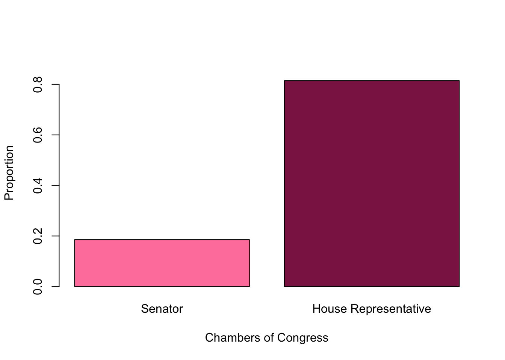
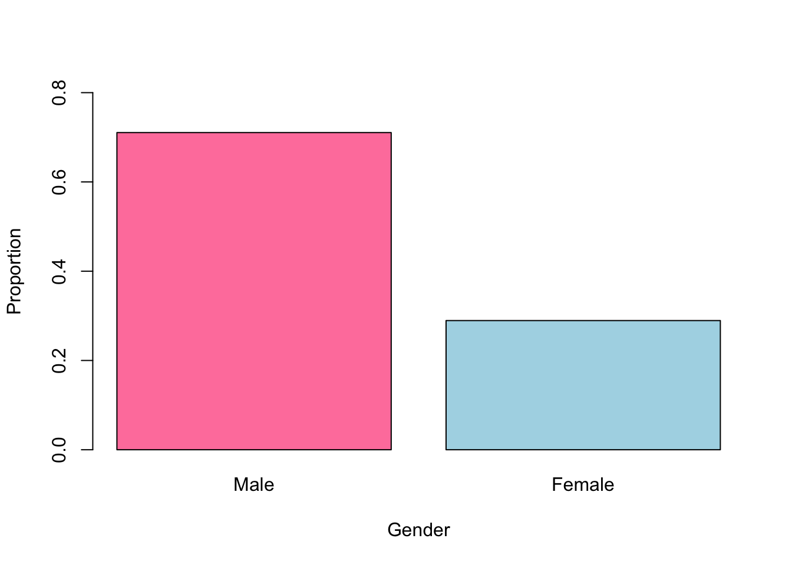
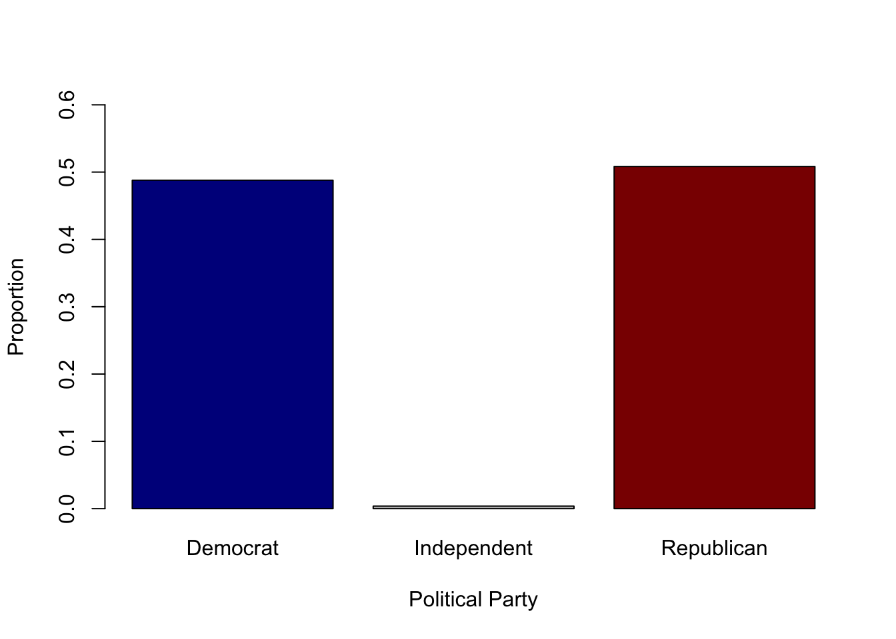
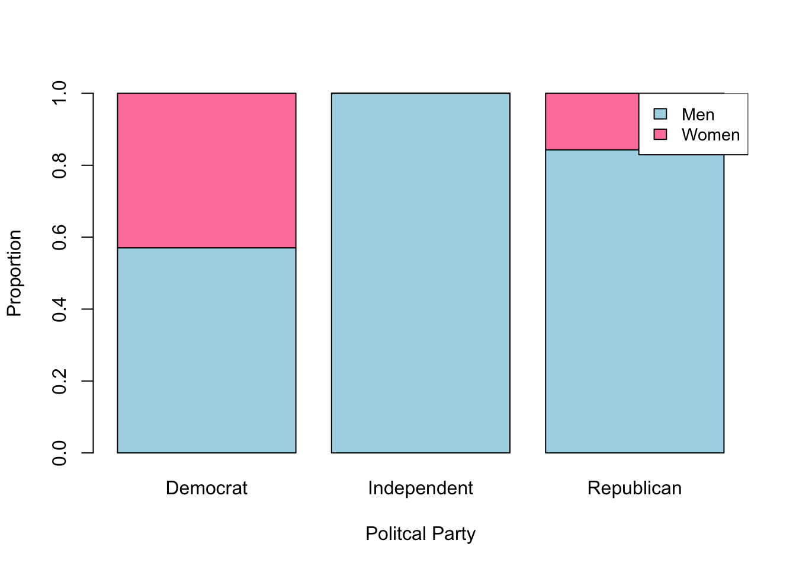
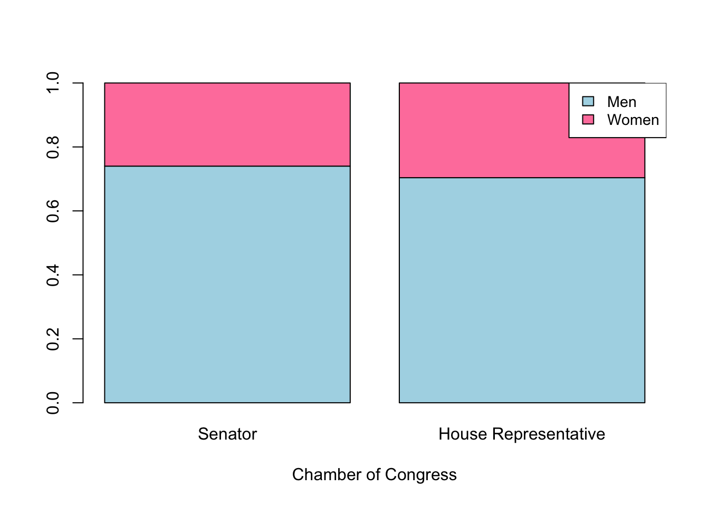

Legislators and Gender Data Report
Description
Assessing gender differences among the Chambers of Congress is crucial to understand how representation, policy priorities, and leadership opportunities vary between legislative bodies (Senate vs. House Representative). These differences can reveal structural barriers, influences on policy making, and the extent to with each chamber reflects the diverse perspectives of the population it serves. The purpose of this report is to analyze the gender composition of the Senate and House of Representatives within the Chambers of Congress, along with their political affiliations. The data was sourced from the legislators of Congress GitHub account and is up to date.
Analysis
First we examined the demographics of the Chambers of Congress. Table 1 presents a breakdown of the sample by gender and party affiliation within each congressional position (Senate vs. House of Representative). Approximately 81% of our sample consists of House Representative, while 19% are Senators. The proportion makes sense, as representation in the House of Representatives is determined by state population, whereas each state elects exactly two Senators, resulting in a total of 100 Senators (50 states x 2 Senators per state). Figure 1 visually illustrates these proportions using a bar graph to depict the distribution of Senate and House of Representative positions.
Figure 1. Bar graph of Frequencies and Proportions of Senate vs House Representative within the Chambers of Congress.
Table 1. Frequencies and Proportions of Gender within the Chambers of Congress.
rep_freq rep_prop
Senator 100 0.1855288
House Representative 439 0.8144712Next, we calculated the frequencies and proportions of gender. Figure 2 presents a bar graph illustrating the overall gender distribution, while Table 2 provides a more detailed breakdown of these proportions.
Figure 2. Bar graph of Frequencies and Proportions of Gender within the Chambers of Congress.

Table 2. Frequencies and Proportions of Gender within the Chambers of Congress.
gender_freq gender_prop
Male 383 0.7105751
Female 156 0.2894249Then we evaluated the political party affiliation within the sample by calculating frequencies and proportions. Figure 3 presents a bar graph illustrating the distribution of political party affiliation, while Table 3 provides a more detailed breakdown of these proportions. Our analysis shows that approximately 50% of the Chambers of Congress are Republican, followed by 49% Democrat, and 0.4% Independent. Notably, there were no females affiliated with the independent party.
Figure 3. Bar graph of Frequencies and Proportions of Political Party Affiliation within the Chambers of Congress.

Table 3. Frequencies and Proportions of Political Party Affiliation within the Chambers of Congress.
party_freq party_prop
Democrat 263 0.487940631
Independent 2 0.003710575
Republican 274 0.508348794Further examining gender differences across political parties, we find that the Democratic affiliation has the most balanced gender distribution, with 57% male and 43% female. In contrast, the Republican affiliation is less evenly distributed, with approximately 84% and 16% female. Figure 4 presents this breakdown of gender representation by party affiliation.
Table 4. Proportion of Gender by Political Party within the Chambers of Congress.
Democrat Independent Republican
Male 150 2 231
Female 113 0 43
Democrat Independent Republican
Male 0.5703422 1.0000000 0.8430657
Female 0.4296578 0.0000000 0.1569343Figure 4. Stacked Bar Graph of Proportion of Gender by Political Party within the Chambers of Congress.

Finally, to address the main purpose of this report we calculated the proportions of gender by position (Senate vs. House Representative) within the Chambers of Congress. Our main finding is that both chambers exhibit a similar male-to-female representation. In the Senate, 74% of members are male and 26% are female, while in the House of Representatives, the ratio is 70% male to 30% female. This finding is somewhat surprising, as we initially, speculated that the House of Representatives would have a significantly higher proportion of female members than the Senate, given that Senate positions often require more years of experience and accreditation-factors that women have only more recently had the opportunity to accumulate. Figure 5 illustrates these gender ratios by Senate and House of Representative using a stacked bar graph. Table 5 provides a more detialed breakdown of these proportions, further distinguishing gender representation within each chamber.
Table 5. Frequencies and Proportions of Gender by Position (Rep or Sen) within the Chambers of Congress.
Senator House Representative
Male 74 309
Female 26 130
Senator House Representative
Male 0.7400000 0.7038724
Female 0.2600000 0.2961276Figure 5. Stacked Bar Graph of Proportions of Gender by Position (Rep or Sen) within the Chambers of Congress.

Conclusion
This report examined the gender composition and political affiliation within the Chambers of Congress, analyzing difference between the Senate and House of Representatives. Our findings indicate that both chambers have a similar male-to-female representation, with the Senate consisting of 74% male and 26% female and the House of Representatives at 70% male 30% female. This result was some what unexpected, as we initially speculated that the House would have a higher proportion of female representation due to the Senate’s traditional higher experience and accreditation requirements.
In terms of political affiliation, our analysis found that the Democratic Party had the most balanced gender distribution (57% male, and 43% female). Additionally, Independent-affiliated legislators were entirely male. These differences highlight potential structural or ideological factors in influencing gender representation within political parties.
Overall, this report provides insight into how gender and party affiliation intersect within the legislative branch. While progress has been made in gender representation particularly within the Democratic Party, disparities remain, especially among Republicans and the Senate. Future research should further explore the factors influencing these trends, such as candidate recruitment, electoral dynamics, state influence, and institutional barriers to female representation in higher legislative roles.
Press Release
Researchers from the University of South Carolina used a publicly available sample of 539 Chambers of Congress. “These findings are important,” stated lead analyst Halle Prine, “because female representation in higher legislative positions allows for better advocacy for vulnerable female populations and promotes more well-rounded policy making.”
The main findings of the study show that more research needs to be conducted to investigate the relationship between gender and legislation positions. Specifically, research should further evaluate the relationship between state influence over gender representation. ```